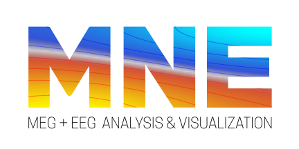

I am a researcher at the French Institute for Research in Computer Science and Automation (INRIA) and a certified psychologist, working and living in Paris.
Over the last years I specialized in time-resolved physiological neuroimaging, i.e., magneto- and electroencephalography. My main interest lies in the functional architecture of brain dynamics in both healthy and clinical populations. At the same time, I am fascinated with collective behavior and social cognition at diverse scales, the glue that links human brain dynamics with societal fate.
A common unifying motif consists in data scientific underpinnings. Reproducible research, scalable numerical methods and data sharing are major concerns in contemporary data-intense science. As part of my work, I devote considerable energy to developing open source software that confronts these bottlenecks by facilitating automated data processing and fast access to data resources.
I hope that my work contributes to a 21st century psychology in an increasingly data-driven interdisciplinary future.
June - 2016poster
Our joint work on decoding of disorders of consciousness from clinical EEG is presented by Federico Raimondo and Jacobo Sitt at ASSC 20, Buenos Aires.
May - 2016GSOC
This year's MNE-Python Google Summer of Code (GSOC) is about our decoding API. I'm co-mentoring Ashish Panda with Jaen-Rémi King and Alex Gramfort.
April - 2016workshop
"MNE-Python for EEG/MEG analysis" at Goethe university, Frankfurt a. M., Germany.
April - 2016talk
"Time resolved neuroimaging", ESGCO 2016, Lancaster, UK.
January - 2016workshop
Nilearn: statistical learning for fMRI in Python, Aachen, Germany.
January - 2016workshop
"Processing EEG using MNE-Python", University of Salzburg, Austria
January - 2016lecture
"Time-resolved noninvasive electrophysiological neuroimaging", doctoral college, University of Salzburg, Austria
November - 2015talk
"Statistische Quantifizierung und Vorhersage von Bewusstsein anhand von kinischem EEG", Department of Psychiatry and Psychotherapy, University hospital Aachen, Germnany
October - 2015talk
"Automated analysis of EEG for disease classification in DOC patients", Bar Ilan niversity, Israel.
October - 2015grant
I received an Amazon in Education grant for research and development on M/EEG resting state dynamics.
September - 2015lecture
"MNE-Python for EEG processing", UBA university, Buenos Aires, Argentina.
September - 2015talk
"Automated analysis of EEG for disease classification in DOC patients", Universidad Torcuato Di Tella, Buenos Aires, Argentina.
June - 2015poster
My work with Alex Gramfort on statistical learning of M/EEG noise covariance estimation and inverse solvers will be presented at the Human Brain Mapping conference 2015, Honolulu, USA
June - 2015talk
"Automated Measurement and Prediction of Consciousness in Vegetative and Minimally Conscious Patients" at the neuroimaging workshop at the International Conference of Machine Learning, Lille, France.
March - 2014GSOC
MNE-Python got accepted for this year's Google Summer of Code (GSOC). I'm mentoring Jaakko Leppäkangas project on interactive viz tools together with Mainak Jas.
December - 2014workshop
MNE-Python workshop for M/EEG processsing, Télécom Paris-Tech, Paris, France.
August - 2014talk
My work on M/EEG noise covariance estimation with Alex Gramfort will be presented at Biomag 2014, Halifax, Canada
June - 2014talk
"Automated model selection for covariance estimation and spatial whitening of M/EEG signals", Human Brain Mapping conference 2014, Hamburg, Germany
May - 2014workshop
MNE-Python for MEG processsing, MRC Cognition and Brain Sciences Unit, Cambridge, UK.
March - 2014GSOC
MNE-Python got accepted for another Google Summer of Code (GSOC). I'm co-mentoring Mainak Jas' project on HTML-Reporting tools together with Alex Gramfort.
December - 2013workshop
MNE-Python for M/EEG processsing, Brain and Spine Institute, Paris, France.
March - 2013GSOC
The first MNE-Python google summer of code (GSOC). I'm co-mentoring Roman Goj project on Beamforming together with Alex Gramfort.
Publications and Preprints
Note. Equal contributions are indicated by an asterisk ✱.
Naccache, L., Sitt, J., King, J., Rohaut, B., Faugeras, F., Chennu, S., Strauss, M., Valente, M., Engemann, D., Raimondo, F., Demertzi, A., Bekinschtein, T. and Dehaene, S. (2016). Reply: Replicability and impact of statistics in the detection of neural responses of consciousness.
Brain
.
Jas, M., Engemann, D., Raimondo, F., Bekhti, Y. and Gramfort, A. (2016). Automated rejection and repair of bad trials in MEG/EEG.
6th International Workshop on Pattern Recognition in Neuroimaging (PRNI)
Varoquaux, G., Raamana, P., Engemann, D., Hoyos-Idrobo, A., Schwartz, Y. and Thirion, B. (2016). Assessing and tuning brain decoders: cross-validation, caveats, and guidelines.
NeuroImage
.
Schleussner✱, C., Donges✱, J., Engemann✱, D. and Levermann, A. (2016). Clustered marginalization of minorities during social transitions induced by co-evolution of behaviour and network structure.
Nature Scientific Reports
6: (Article--number).
Jas, M., Engemann✱, D., Bekhti, Y., Raimondo, F. and Gramfort✱, A. (2016). Autoreject: Automated artifact rejection for MEG and EEG data.
arXiv preprint arXiv:1612.08194
.
Engemann, D. and Gramfort, A. (2015). Automated model selection in covariance estimation and spatial whitening of MEG and EEG signals.
NeuroImage
108: (328--342).
Naccache, L., King, J., Sitt, J., Engemann, D., El Karoui, I., Rohaut, B., Faugeras, F., Chennu, S., Strauss, M., Bekinschtein, T. and Dehaene, S. (2015). Neural detection of complex sound sequences or of statistical regularities in the absence of consciousness?.
Brain
.
Engemann, D., Strohmeier, D., Larson, E. and Gramfort, A. (2015). Mind the noise covariance when localizing brain sources with M/EEG.
International Workshop on Pattern Recognition in NeuroImaging (PRNI)
Engemann, D., Raimondo, F., King, J., Jas, M., Gramfort, A., Dehaene, S., Naccache, L. and Sitt, J. (2015). Automated Measurement and Prediction of Consciousness in Vegetative and Minimally Conscious Patients.
ICML Workshop on Statistics, Machine Learning and Neuroscience (Stamlins 2015)
Koeymen, B., Lieven, E., Engemann, D., Rakoczy, H., Warneken, F. and Tomasello, M. (2014). Children's norm enforcement in their interactions with peers.
Child development
85: (1108--1122).
Gramfort, A., Luessi, M., Larson, E., Engemann, D., Strohmeier, D., Brodbeck, C., Parkkonen, L. and Hamalainen, M. (2014). MNE software for processing MEG and EEG data.
Neuroimage
86: (446--460).
Bzdok, D., Langner, R., Schilbach, L., Engemann, D., Laird, A., Fox, P. and Eickhoff, S. (2013). Segregation of the human medial prefrontal cortex in social cognition.
Front Hum Neurosci
7: (232).
Gramfort, A., Luessi, M., Larson, E., Engemann, D., Strohmeier, D., Brodbeck, C., Goj, R., Jas, M., Brooks, T., Parkkonen, L. and Hamalainenen, M. (2013). MEG and EEG data analysis with MNE-Python.
.
Engemann✱, D., Bzdok✱, D., Eickhoff, S., Vogeley, K. and Schilbach, L. (2012). Games people play—toward an enactive view of cooperation in social neuroscience.
Frontiers in human neuroscience
6: (148).
Software
Loading my contributions data just for you (...)
MNE Software for MEG and EEG

MNE-Python is the Python open source toolbox for processing and visualizing MEG and EEG data.
It facilitates a wide range of data processing task, including artifact rejection, diagnositc visualizations, decoding, source localization, time-frequency analysis and statistics.
My most recent major contribution to MNE is the subproject MNE-HCP for fast access to the Human Connectome Project MEG data.
Tools for large-scale analysis of MEG and EEG data
Over the last years I developed novel methods and tools that facilitate analysis of MEG and EEG at diverse scales by adaptively automating common processing steps and simplifying access to data resources.
The problem of data cleaning
Removing artifacts from EEG and MEG signals is a common and necessary step in data analysis and, unfortunately, has claimed significant investment of human attention in the past. I developed and evaluated a novel algorithm, termed autoreject, for detecting and handling contaminated MEG and EEG data segments.
Autoreject is described in Jas et al 2016 and is readily usable in a "plug and play" manner in a wide array of situations.
Notably, its successful usage does not require deep understanding of the method as it uses machine learning technology to handle artifact rejection in a data-driven manner, hence, reducing human processing time.
It will soon be disseminated through the MNE Software. The code is accessible on github.
Consider our arXive preprint for in-depth validation including a reanalysis of the Human Connectome Project MEG data.
The problem of covariance estimation for spatial whitening
Spatial whitening based on the between-sensors covariance is a common element of source localization techniques and affects scaling and geometry of the estimated sources.
Unfortunately, the practically unknown effective sampling density can call for data-dependent regularization to ensure well-posed covariance estimates.
I developed and validated a novel algorithm that achieves scalable and data-driven regularization of the covariance (Engemann and Gramfort 2015, Engemann et al. 2015) by exploiting machine learning techniques
and the negative log-likelihood of the covariance as objective.
The code is dissiminated through the MNE-Software and can be used through the high-level functions for covariance estimation.
This functionality allows to re-allocate human attentional resources by automating a common problem of the most popular inverse solution techniques.
For an overview, consider these slides.
Automated extraction of diagnostics from clinical EEG
EEG is a commonly used technique used in neurology to supplement diagnostics of disorders of consciousness.
At the Brain and Spine Institute (ICM), Paris,
§and in collaboration with the intensive care unit at the Pitié-Salpêtrière Hospital, I developed an automated, scalable pipeline for extraction of EEG-biomarkers and automated diagnostical assistance.
This tool-stack can be run on various computational architectures, including Amazon Webservices, and is capitalizing on web-technology.
For example, it can be plugged into a webserver with remote-control over web browser and generates HTML reports by using the MNE-Report technology.
The solution is described in Engemann, Fraimondo et al 2015. Unfortunately, the source code is currently not compatible with open source licensing.
Parts of the code will be made available soon on github.
Fast access to the Human Connectome Project MEG data
The Human Connectome Project is one important data resource providing a wealth of information, i.e., hemodynamic and electrophysiological signals from task and resting state contexts, psycho-medical and genetic data.
By providing curated pipeline outputs at vairous processing stages, next to the raw data, this resource lends itself to validation for various research questions.
I am the founder of the MNE-HCP, a novel library designed to maximize the comfort when using this data resource for analysis of MEG.
MNE-HCP abstracts away difficulties due to diverging coordinate systems, distributed information, and file format conventions.
Providing a simple and consistent access to HCP MEG data facilitates emergence of standardized data analysis practices and helps to drastically reduce human processing time when accessing these data from within Python.
Scikit-Learn
Scikit-Learn is a rich statistical learning library that makes available a wide array of statistical models through a coherent interface.
I have contributed several performance enhancements and documentation improvements to the decomposition module and computational core functions